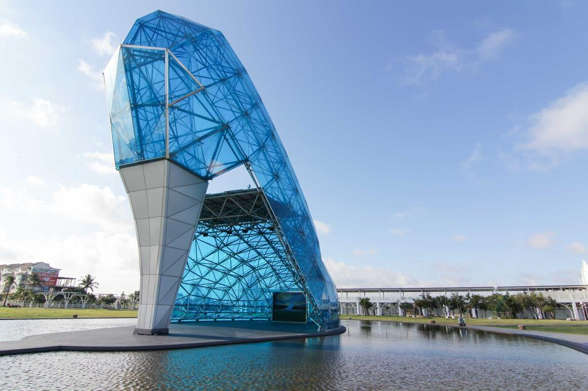

回到目前景點介紹
地區篩選


嘉義
高跟鞋教堂
高跟鞋教堂高度約17m，寬度約11m，主結構由1,269根鋼架組成，外表共約320餘片玻璃，造型相當亮麗美觀，其設計與裝設不僅是全臺第一，更是全世界唯一。高跟鞋教堂幸福意象工程施工相當不易，320餘片玻璃大小、安裝角度皆不同，必須克服高跟鞋的形狀及彎曲幅度，故鋼架及玻璃組裝精度要求極高。玻璃高跟鞋象徵「每個小女孩都曾夢想有雙漂亮的高跟鞋，伴著自己走出美麗優雅的人生。」
開放時間：全天開放
交通資訊：
自行開車：
國道1號→嘉義系統交流道下→省道臺82線→縣道157線→省道臺17線→上海路→布新橋→中山路→海興街。
大眾運輸：
搭臺鐵至新營站下—轉搭台灣好行61西濱快線至高跟鞋教堂站下。
搭高鐵或臺鐵至嘉義站下—轉搭嘉義客運7209H、7209J、嘉義縣公車7327D、7327E、7327H至布新橋站下。